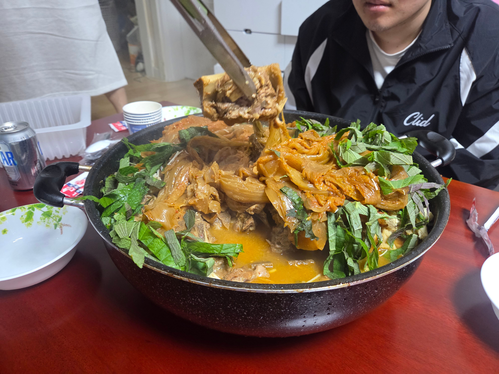
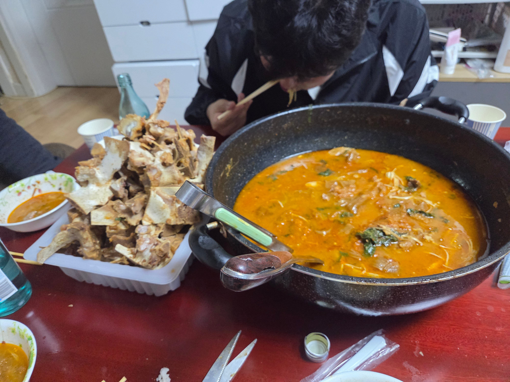

네명이서 진짜 배터지게 먹었음.. 와 진짜 천상의 맛이다


네명이서 진짜 배터지게 먹었음.. 와 진짜 천상의 맛이다
행님 초딩 애들 두명이랑 겁나 잘놀아줬거든ㅋㅋ 커뮤 지박령이라 이탈리안 브레인롯 유행할 때 애들한테 점수 많이 땄지
초딩 애들 두명이 너한테 삼촌삼촌 하면서 따라댕길듯ㅋㅋㅋ
ㅇㅇ마즘ㅋㅋㅋ진짜 책임없는 쾌락 맘껏 즐김
이새끼 오기 며칠전부터 달력에 x표시 하고 있었을듯
몰래 부기사주기! 피시방 데려가기!
ㄹㅇ 안봐도 사회생활 보임 ㅋㅋ
이제 저기에 볶음밥 해먹어야지
와 묵은지 감자탕
남은 국물 자작하게 밥 말아먹고싶다 ㅋㅋㅋㅋ
소주 각자 한병씩 앞에두고 먹는거? 안주 미쳤다 ㅋㅋ
저래먹으면 해주는 사람도 보람 넘치지 ㅋㅋㅋㅋ
와 뼈가지 갯수봐라 진짜 잘먹은거 티나넼ㅋㅋㅋㅋㅋㅋㅋㅋㅋㅋㅋㅋㅋㅋ
등뼈 한줄 사온거 다넣고 끓였나
손이 크시네
와 때깔 오진다


캬 ㅋㅋㅋ
와 겁나 맛있겠네
개 맛있었겠네
충성 맹세 챠박고 먹어라

열심히 만들어준 음식 다 먹어주면
음식해주는 사람 기분 진짜 째지는데 다음에 또 해주겠네
와씨 감자탕 손 많이 가서 하기도 귀찮고 힘든데 10kg 대단하네
뼈 싹싹 다 발라먹었네 개추
요리잘하는와이프얻는것도 복이제
돈 드라면 종종 얻어먹을것 같아
에너지 넘치는 애들 잘놀아주고 음식만들어놓은거 저렇게 잘먹어주면 또해줄맛 나겠네
와 보증서줬냐 킹자탕을 10키로나 ㄷㄷ
인복도 복이라고 생각함 좋은 복
아따 맛나것네
사회생활 얼마나 잘했으면 감자탕 10키로를 만들어줬을까 ㅋㅋㅋㅋㅋㅋ
짤만 봐도 맛있겠다